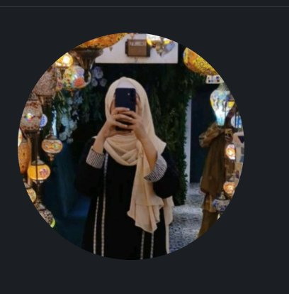

Aspiring Data Analyst
A highly motivated and detail-oriented BS Mathematics student with strong analytical, logical, and problem-solving abilities. Passionate about data analysis, visualization, and transforming raw data into meaningful insights.

I am a highly motivated and detail-oriented final-year BS Mathematics student at Bahauddin Zakariya University (BZU), Multan, enrolled in the Centre for Advanced Studies in Pure and Applied Mathematics (CASPAM). With a strong CGPA of 3.57/4.00, I have consistently demonstrated academic excellence — earning 1st position in Semester 7 and 3rd position in Semester 5.
My academic journey has equipped me with a solid foundation in pure and applied mathematics, statistical analysis, and computational modeling. I am deeply passionate about data analysis and visualization — turning raw, complex datasets into clear, meaningful insights that drive real-world decisions.
Beyond academics, I have gained hands-on professional experience through a 6-week internship at MCB Bank Limited, Multan, where I developed an understanding of financial operations, customer service, and organizational workflows. I also served as Vice President of the CASPAM Welfare Council, demonstrating my leadership and teamwork abilities.
For my Final Year Project, I led the development of the University AI Analytics Agent — an intelligent conversational system powered by LLaMA 3.3-70B, RAG retrieval, FAISS, and Machine Learning, built to analyze university academic data through natural language queries.
I am a continuous learner who believes in combining technical skills with creative thinking. I hold certifications in Graphic Designing, AI Image Generation, and Video Editing, and I am always looking for opportunities to grow professionally and contribute meaningfully.
Canva designing certification from Z-S Learning Institute.
AI creative image generation certification.
Professional video editing and multimedia production.
Caspam Welfare Council leadership recognition.
Academic excellence award in matriculation.
Outstanding academic achievement at BZU.
Academic distinction award at BZU in 5th semester.
An Intelligent Conversational System for Academic Data Analysis
A production-grade AI-powered academic analytics system that combines Large Language Models (LLMs), RAG retrieval, and Machine Learning for intelligent conversational university data analysis. The system allows natural language querying over university datasets, providing instant insights, predictions, and visual analytics.
CGPA: 3.57 / 4.00
Centre for Advanced Studies in Pure & Applied Mathematics (CASPAM)
1st Position – Semester 7 3rd Position – Semester 5868 / 1100
Pre-Engineering
942 / 1100
Silver Medal – Academic Excellence